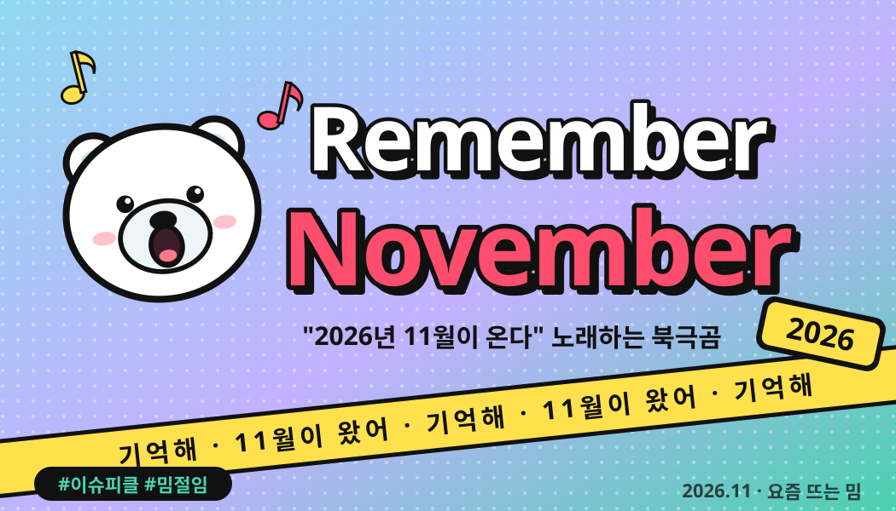
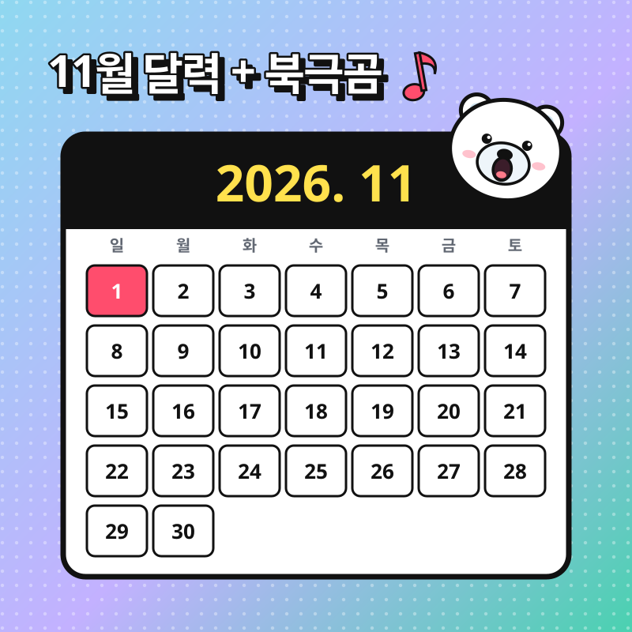
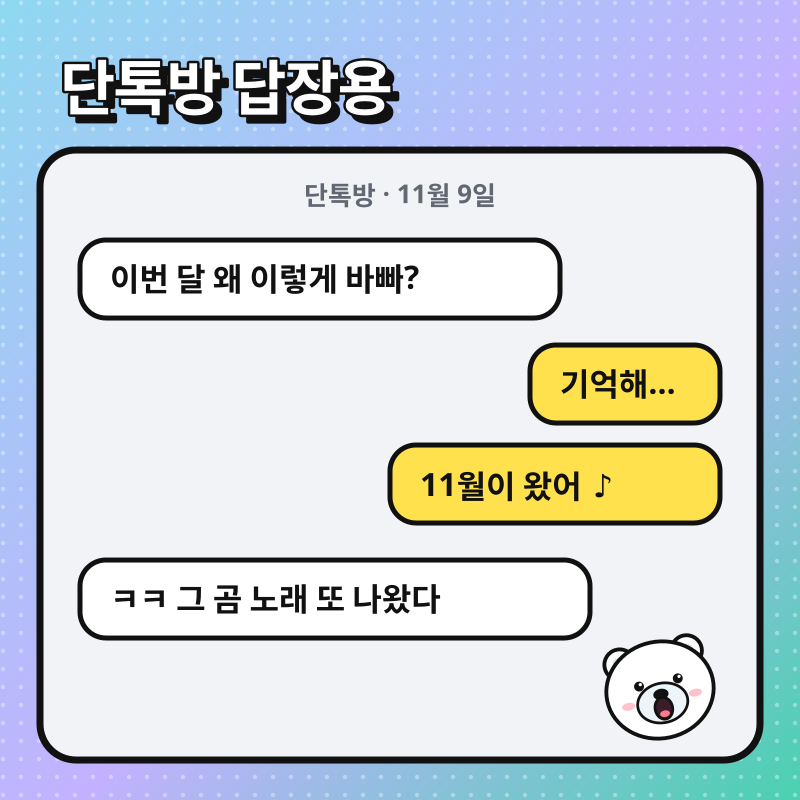
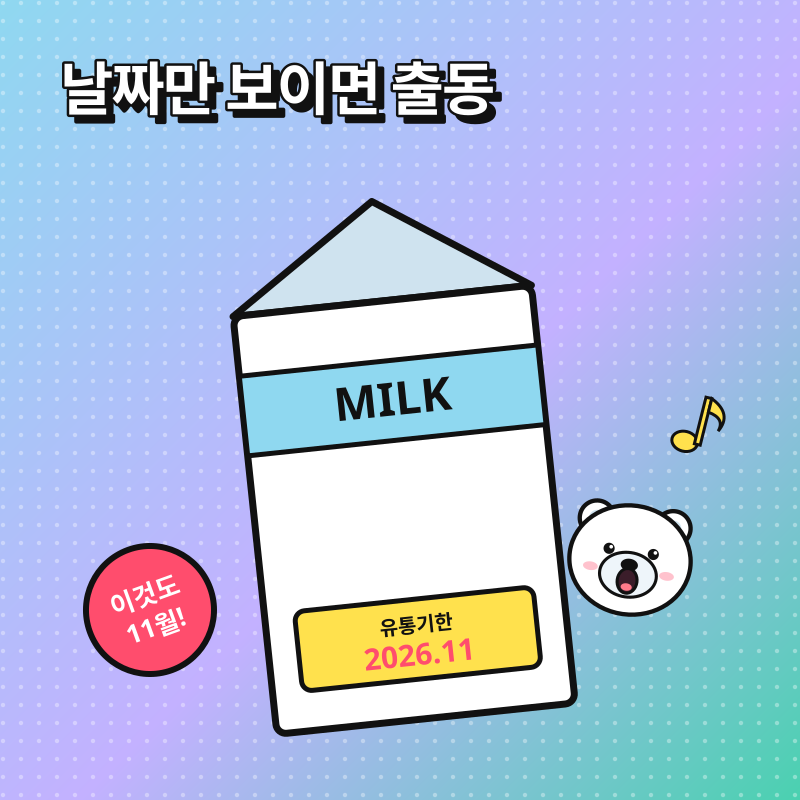

Remember November 뜻? 드디어 와 버린 그 11월 🐻❄️

*출처* 이슈피클 제작
3줄 요약
- AI로 만든 북극곰이 "Remember November 2026 is coming"이라고 노래하는 밈이에요.
- 2026년 9월 초부터 숏폼에서 퍼졌고, 진짜 11월이 된 지금 다시 소환되고 있어요.
- 11월이 보이는 사진 옆에 곰만 붙이면 끝! 뜻은 없어요, 그게 포인트예요.
💡 무슨 뜻이에요?
'Remember November 2026 Is Coming'은 우리말로 '기억해, 2026년 11월이 다가오고 있어' 정도예요. 동그란 얼굴의 북극곰이 이 가사를 진지하게 노래하는 AI 영상이 원본이에요(나무위키).
재밌는 건 11월에 무슨 일이 생기는지 아무도 설명하지 않는다는 점이에요. 예언처럼 들리지만 아무 의미가 없고, 그 허무한 비장함이 웃음 포인트예요(KickClap).
📈 이렇게 떴어요
- 2023.3러시아어 틱톡에 이상한 북극곰 사진과 함께 '2026년 11월의 밈이라 지금은 이해 못 한다'는 농담이 올라와요 Know Your Meme 정리
- 2026.8.28틱톡 @bigbakdiskk28이 북극곰이 노래하는 AI 영상 공개. 올리버 트리 'Life Goes On' 비트 사용 Mendoi
- 2026.9 초11월 달력·유통기한 사진에 붙이는 편집이 틱톡·릴스로 번지며 국내 숏폼까지 유행 인스타공백닷컴 · 나무위키
- 2026.11예고(?)했던 바로 그 11월 도착. 곰이 다시 불려 나오는 중
3년 전 '미래에서 온 밈'이라는 농담이 진짜 날짜가 다가오면서 완성된 셈이에요.
🖼 이렇게 만들어요 (예시 3장)



*출처* 이슈피클 제작 (원본 영상 장면이 아닌 직접 그린 예시예요) · 옆으로 밀어서 보기
🎬 영상으로 보기
지금 인기 영상 목록에는 관련 영상이 없어요.
유튜브에서 더 보기 ↗*출처* YouTube 한국 인기 영상(공식 API)에서 자동으로 골라요
💬 이렇게 써요
- 월요일 아침기억해… 11월이 왔어. 연차는 남았니?
- 마감 앞둔 직장인Remember November… 보고서 마감은 15일이야
- 수험생 응원11월이 왔어 🐻❄️ 이제 진짜 얼마 안 남았다, 힘내!
- 장보기이 우유 유통기한 2026.11.. 곰이 경고했잖아
📌 써먹는 팁
- 인스타 스토리: 11월 계획표나 달력 사진에 북극곰 스티커 + 원곡 오디오.
- 단톡방: 갑자기 바빠진 이유를 물으면 진지한 말투로 "기억해…" 한마디.
- 주의: 뜻을 설명하면 재미가 반감돼요. 이유 없이 비장한 게 이 밈의 맛이에요.
❓ 자주 묻는 질문
'Remember November 2026'은 무슨 뜻이에요?
'기억해, 2026년 11월이 다가오고 있어'라는 뜻의 영어 가사예요. AI로 만든 북극곰이 이 말을 노래하는 영상에서 나온 밈이고, 특별한 의미 없이 11월이 온다는 사실을 괜히 비장하게 알리는 데 써요.
2026년 11월에 정말 무슨 일이 일어나요?
아니에요. 2023년 원조 게시물이 '이 사진은 2026년 11월의 밈이라 지금은 이해 못 한다'고 농담한 데서 시작했어요. 끝까지 설명해 주지 않는 것 자체가 웃음 포인트예요.
노래는 어디서 나왔어요?
2026년 8월 28일 틱톡 계정 @bigbakdiskk28이 올린 AI 영상에서 시작했어요. 올리버 트리(Oliver Tree)의 'Life Goes On' 비트에 맞춰 북극곰이 노래해요.
어떻게 써요?
11월 달력, 유통기한이 2026년 11월인 물건, 11월 개봉 영화 포스터처럼 '11월'이 보이는 사진 옆에 북극곰이나 노래를 붙이면 돼요.
절임장 · 뜨는 말만 골라 새콤하게 절여 와요 🥒